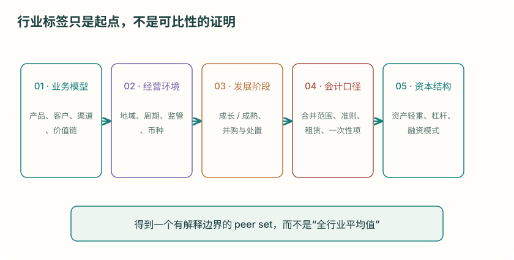
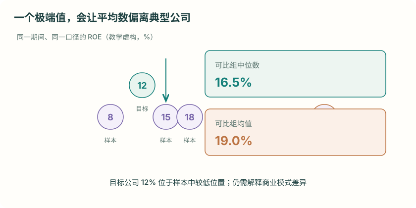

同业比较与行业分析：建立真正可比的参照系
毛利率 20% 是优秀还是平庸？脱离行业、商业模式、会计口径和发展阶段，单独给一个比率贴标签没有意义。比较的第一步不是排名，而是建立可比样本。
同一个指标，为什么在不同企业代表不同含义？
零售商 20% 的毛利率可能意味着较高的商品加价率；软件企业 20% 的毛利率则可能提示成本结构、收入分类或商业模式与典型软件公司不同。银行的资产负债表与制造企业也不在同一个经济结构中。比率只有放在业务背景和统一口径下才有解释力。
横向比较（cross-sectional）是在相同或相近期间比较多家企业；纵向比较（time-series）是在同一家企业内部观察趋势。前者回答“相对同业处于什么位置”，后者回答“企业自身发生了什么变化”。两者结合，才能避免把行业共同周期误当作公司独有优势。

可比公司选择：先比较经济实质
可比公司不应只按交易所行业分类或证券软件标签机械选择。建议至少核对：
- 产品与客户：收入来自相似产品、客户群和合同结构吗？客户集中度、渠道与地区分布是否相近？
- 商业模式：直营、经销、平台、订阅、项目制或代工模式，对收入确认、毛利率和应收账款有不同影响。
- 发展阶段：早期扩张、成熟运营、转型或收缩阶段，费用率和资本需求差异很大。
- 资本强度与融资：租赁、外包、存货、固定资产、金融负债和现金储备的结构是否相近？
- 地域与监管：市场价格、税制、汇率、行业监管和会计准则是否存在系统差异？
可比组不一定越多越好。小样本的中位数和分位数会很不稳定；大样本则可能混入不同商业模式。更好的做法是保留核心同模式样本，并把相邻模式公司作为第二层参照，清楚说明纳入和剔除理由。
统一报告期间、合并范围与会计口径
比较之前先做口径检查：报告期长度、财年截止日、合并或母公司口径、币种和汇率、一次性损益、重大并购处置、会计政策变更、租赁负债、研发资本化、收入总额法/净额法，以及分部披露。不同会计框架的指标定义不同时，应先调节或明确标记不可直接比较。
共同基数分析（common-size）可以降低规模差异：利润表项目除以收入，资产负债表项目除以总资产，现金流项目可按收入或总现金流入作辅助比例。它不消除商业模式差异，只帮助发现结构差异。对于极端值、负分母和分部结构变化，百分比也可能失去解释力。
同样要区分合并范围和有机增长。并购主体只纳入部分月份、处置业务或内部交易抵销会使收入与资产同比变化不一致；不能直接拿合并收入增速与未调整的同行增速排名。
中位数、均值与分位数：不要只看一个行业平均
平均数容易受极端值影响，中位数更接近样本中的典型观察值，但它也不是“真正的行业标准”。分位数可以展示样本分布；样本量很小的时候，四分位数变化会非常敏感，必须披露样本数量和具体公司。
教学样本四家同行 ROE 为 8%、15%、18%、35%。中位数为 16.5%，均值为 19%。高 ROE 的 35% 将均值拉高；目标公司 ROE 为 12%，低于同行中位数，但不能据此判断它的经营一定较差。它可能是资本结构更保守、正处于产能建设期，或业务组合不同。

标准分数 (z=(x-mu)/sigma) 可以表达相对样本均值的距离，但均值和标准差对极端值敏感。样本偏态时，可同时报告中位数、四分位距或稳健标准化结果。对于 DSO、杠杆率、费用率等“越低未必越好”的指标，必须先定义经济方向，不能直接把所有 z-score 同向相加。
行业生命周期与行业特化指标
行业生命周期可帮助解释资本需求和经营节奏，但“导入期、成长期、成熟期、衰退期”不是财务数据自动给出的精确标签，也不存在适用于所有行业的统一收入增速区间。应结合需求渗透率、产能扩张、竞争格局、监管、技术替代和资本投入判断。
行业特化指标能补充通用比率：银行关注净息差、不良贷款、拨备覆盖和资本充足；保险关注综合偿付能力与负债久期；订阅软件关注经常性收入、客户流失、净收入留存与获客回收期；零售关注同店销售、库存周转和门店效率。各类指标有自己的定义与披露口径，不能用一个指标跨行业排名。
波特五力等战略框架可以解释供应商、客户、替代品和竞争强度如何影响毛利、账期、资本投入和回报，但战略判断需要产业数据与公司披露支持，不能把“竞争强”直接等同于某个固定财务比率。
可比样本工作台：中位数、均值与相对位置
调整假设，即时复算
默认假设该指标为“越高越好”的 ROE。更换为 DSO 等反向指标时，应在解读中反转排名方向；小样本分位数只作描述，不是统计推断。
默认样本中位数 16.5%、均值 19%、目标值 12% 的同行百分位约为 25%。修改 35% 的极端值，观察均值如何变化而中位数相对稳定。
形成可复核的同业比较结论
报告应附可比公司清单、纳入理由、排除理由、数据期间、合并口径、币种、会计框架、指标公式、缺失值处理和极端值处理。重要指标同时展示目标公司、同行中位数、分布范围与多年趋势。若无法取得足够可比数据，应坦诚说明，不要用伪精确的行业平均补齐。
自测：目标 ROE 为12%，四家同行为8%、15%、18%、35%，目标是否一定“经营较差”？
不能。目标值低于样本中位数16.5%，但应继续核对资本结构、业务组合、生命周期、并购与会计口径。排名只描述样本位置，不解释原因。
结论：同业比较的质量取决于样本可比性和口径透明度，而不是表格中公司数量或排名的精确小数位。
依据与适用边界
本章金额、公司与计算案例均为教学虚构；红旗和筛查指标不是舞弊认定。真实判断应结合适用会计准则、监管规则、合同和独立证据。